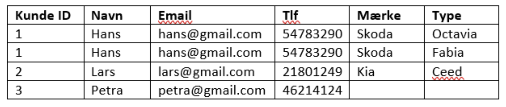
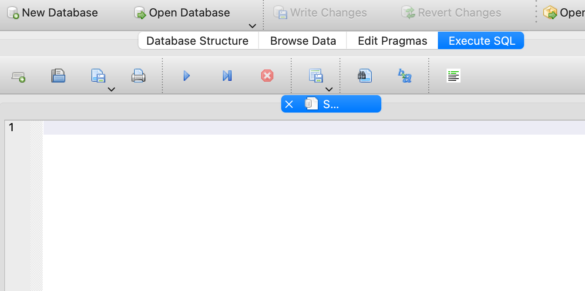

Databaser
Vi skal arbejde med databaser og implementere dem i en simpel version på en hjemmeside.
Indhold
- Projektbeskrivelse
- Tre-lags-arkitektur
- Introduktion til databaser med Vestfyn
- Normalisering
- E/R diagrammer
- DB browser, egen database
- SQL kommandoer
- Egen relationel database
- Relationstabel
- Databaser og hjemmesider
- FN mål
Projektbeskrivelse
Eksamenstiden nærmer sig, og en måde at øve sig på er med flashcards eller quizzer. I skal udvikle en prototype på en quiz- eller flashcard-hjemmeside. Når I udvikler jeres projekt, skal I kombinere databaser med hjemmesideprogrammering.
IT-løsningen skal indeholde:
- En HTML-brugerflade, hvor der er tænkt over brugervenligheden. Se teorien her: interaktionsdesign.
- Data skal organiseres i en simpel database (f.eks. et regneark), som kan importeres som en CSV-fil med JavaScript.
- Der skal redegøres for, hvordan databasen kan normaliseres ved at gøre den til en relationel database. Redegør herunder for relationsgraden. Det er ikke nødvendigt at lave selve relationsdatabasen.
Tre-lags-arkitektur (kilde: iftek)
I en tre-lags-arkitektur inddeles et program i tre lag. Dette er nyttigt i implementeringen af programmer, da de tre lag så vidt muligt holdes adskilte, hvilket gør hele programmet lettere at overskue.
Præsentationslag: Det øverste lag, der håndterer modtagelse og præsentation af data. Dette lag er kendetegnet ved at være tæt på brugeren af programmet, ofte i form af en brugergrænseflade.
Logiklag: Det midterste lag, der håndterer udvekslingen af data mellem præsentationslaget og datalaget. Dette lag står for beregninger og forretningslogik.
Datalag: Det nederste lag, der opbevarer og håndterer data. Dette lag er kendetegnet ved at være tæt på computeren og kan være struktureret som en database.
Vi vil arbejde med, hvordan man organiserer data i databaser.
Introduktion til databaser - Vestfynedu style
I skal bruge den glimrende introduktion til databaser, som findes her: LINK.
Øvelse
- Læs introduktionen og se videoen "Introduktion til databaser".
- Forklar, hvad entiteter, attributter, primærnøgle og fremmednøgle er.
Normalisering
Normalisering af en database er en teknik, der sikrer, at rettelser i databasen kan foretages med mindst mulig indflydelse på det oprindelige system. Målet er at minimere redundant data, dvs. at samme oplysning ikke gemmes flere steder. Med normalisering bliver det lettere at foretage rettelser i databasen (så skal man kun rette det ét sted). Læs mere her: balslev.
Normaliseringsregler:
- Unik primærnøgle.
- Ingen kolonne må være afhængig af andre kolonner end primærnøglen.
- Der må kun være én datatype i hver kolonne.
- Det samme data skal kun forekomme ét sted (undgå redundans).
- Data skal være relateret til hinanden.
Øvelse
- Se videoen om normalisering af databaser, start 4 minutter inde: Video.
- Normaliser nedenstående database.

E/R diagram
Se denne video om E/R diagrammer: E/R diagrammer.
Øvelse
- Se filmen.
- Brug draw.io til at lave et E/R diagram over kunde/bil-databasen.
DB Browser
Vi skal arbejde med et databaseprogram. Det vi bruger er DB Browser SQlite.
- Download programmet, DB Browser SQlite.
- Download databasen music, music.db.
- Åben music databasen og prøv de forskellige faner.
- Identificer de forskellige Entiteter, Attributter og nøgler.
- Er databasen normaliseret?
SQL kommandoer
Hvis man arbejder med rigtigt store databaser er det ikke praktisk at bruge regnearksrepresentationen til at hente data ud. Den mest udbredte sprog til at arbejde med databaser er SQL, Structured Query Language. Vi bruger SQL fanen i BD Browser,

Øvelse
- Prøv de nedenstående kommandoer
SELECT * FROM albums
SELECT count(*) FROM albums
SELECT * FROM albums WHERE ArtistId = 2
- Lav om i sidste linje for at finde ud af hvilken kunstner der har ArtistId=2
INNER JOIN er en måde at sætte tabeller sammen.
Øvelse
- Kør koden og forklar hvad der sker ved INNER JOIN
SELECT artists.Name, albums.Title
from artists
INNER JOIN albums ON artists.ArtistId =albums.ArtistId
Her er et cheat sheet.
Pas på med hvad I beder om!

Øvelse
- Undersøg andre dele af music databasen.
Egen relationel database
Vi vil lave tabellerne med biler om til en database.
Øvelse
- Vælg Ny database, giv tabellen et navn, add de forskellige søjler og vælg primærnøgle.
Den generere selv SQL koden,
CREATE TABLE "kunder" (
"kunde_id" INTEGER,
"navn" TEXT,
"email" TEXT,
"tlf" INTEGER,
PRIMARY KEY("kunde_id")
);
- Brug koden til at lav en tabel for bilmærker
- Brug nedenstående kode til at udfylde tabellen
INSERT INTO kunder VALUES (1,"Hans","hans@gmail.com","54783219")
- Join de to tabellers så I kan finde ud af hvilke bilen der hører til hvilke personer.
Relationstabel
SELECT kunder.*, biler.*
from kunder
INNER JOIN biler ON relation.bilID = biler.bilID
INNER JOIN relation ON kunder.kundeID = relation.bilID
Øvelse - egen database.
I skal lave jeres egen database. I må selv vælge hvad databasen skal indeholde men her er et par forslag,
- Spillere, resultater og turneringer i den lokale skakklub.
- Toppings og isvarianter i den lokale isbar.
- Kunder og varer i en online shop.
- Deltagere på musik-festeivaller til sommer.
Som altid er det smart at starte simpelt så,
- Beskriv kort hvad indeholdet af en simpel version af jeres database er.
- Skitser den som én tabel i regneark.
- Normaliser databasen, stadigt i regneark.
- Lav et E/R diagram og vurder graden af relationerne.
- Hvis I har en mange til mange relation så lav den simplere.
- Implementer databasen I DB browser.
Databaser og hjemmesider
Vi skal bruge vores viden om databaser til at strukturere indholdet i en hjemmeside. Vi skal bruge javaScript til at loade data og for at kunne bruge det. JavaScript er godt hvis man vil lave interaktive hjemmesider.
Her er en hjemmeside hvor informationen om de forskellige FN verdensmål er gemt som en kommasepareret fil, csv. https://mpsteenstrup.github.io/databaser/filer/FN_goals_loaddata.html
Øvelse
- Hvorfor er det en god ide at adskille indhold fra strukturen og layoutet i en hjemmeside?
- Beskriv hvad de tre formater,
html, css, javaScriptbruges til på en hjemmeside.
Introduktion til javaScript
Vi bruger w3schools javaScript tutorial til at komme i gang.
Eksempel
Første eksempel er en knap som kan vise tid og dato, https://mpsteenstrup.github.io/databaser/filer/ex1.html.
Koden ser sådan ud
<!DOCTYPE html>
<html>
<body>
<h2>Ex 1</h2>
<button type="button" onclick="getDate()"> Tid og dato</button>
<p id="demo"></p>
</body>
</html>
<script>
function getDate(){
document.getElementById('demo').innerHTML = Date();
}
</script>
De første 3 linjer er html setup og så en overskrift Ex 1. Det ny er at vi laver en knap
<button type="button" onclick="getDate()"> Tid og dato</button>
typen er sat med type="button" og den kalder funktionen getDate() ved kommandoen ```onclick="getDate()"````.
JavaScript delen er i script tags og kan placeres nederst på siden. Funktionen bliver defineret med function detDate() { } og har kun én linje kode.
document.getElementById('demo').innerHTML = Date();```` finder det element på siden med ``ìd="dem0"og sætter det lig Date()som er en indbygget funktion i javaScript til at give tid og dato.
Øvels
- Kopier koden ind i et VSCode dokument og kør den. Det er også muligt at bruge w3schools online editor,https://www.w3schools.com/tryit/tryit.asp?filename=tryhtml_hello.
- Prøv at lav om i koden så den i stedet fortæller en joke når man trykker på knappen, husk at tekst skal i gåseøjne " ".
Data og hjemmesiden
Vi skal nu bruge vores nyvundne JS skills til at loade data. Data skal være gemt som csv fil og have overskrift på alle kolonner.
eksempel 2, load biler databasen
Eksemplet kan hentes her https://mpsteenstrup.github.io/databaser/filer/ex2.zip.
Vil loade databasen filer/biler.csvsom indeholder
bilID,type,mærke
1,Octavia,Skoda
2,Fabia,Skoda
3,Ceed,Kia
Hjemmesiden kan ses her https://mpsteenstrup.github.io/databaser/filer/ex2.html. Hvis man bruger Google Chrome kan man se javaScript konsollen ved at gå ind under Vis->Udvikler->JavaScript-konsol. So I kan ligger data i et lidt sjovt format kaldet en dictionary
0:{bilID: '1', type: 'Octavia', mærke: 'Skoda'}
1:{bilID: '2', type: 'Fabia', mærke: 'Skoda'}
2: {bilID: '3', type: 'Ceed', mærke: 'Kia'}
For at få fat i informationen om mærket i første linje skal man skrive data[0]["mærke"]. Som før indsætter vi informationen i dokumentet med koden document.getElementById('biler').innerHTML = data[0]["mærke"] + " "+ data[0]["type"];
For at kunne holde styr på data bruger vi biblioteket Papa som kan loades med denne kommando
<script src="https://cdnjs.cloudflare.com/ajax/libs/PapaParse/5.3.0/papaparse.min.js"></script>
Data bliver loadet i denne del af koden når hjemmesiden loades,
window.onload = function() {
var xhr = new XMLHttpRequest();
xhr.open("GET", "biler.csv", true);
xhr.responseType = "text";
xhr.onload = function() {
data = Papa.parse(xhr.responseText, { header: true }).data;
};
xhr.send();
}
Det er ok at tage denne del som lidt at en black-box, men den sender en html-reguest om at åbne filen "bilse.csv" og gemmer det i variablen data.
Øvelse
- Hent de to filer, ex2.html og biler.csv, fra mappen
filerog prøv at kør programmet i VSCode eller VS Code. Det er ikke muligt bare at klikke på html filen på grund af sikkerhedsbekymringer. - Lav om i filen så noget andet bliver vist.
FN og verdensmålene
Vi vender nu tilbage til Hjemmesiden med FNs verdensmål,FN_goals_loaddata.html. Filen kan ses her, FN_goals_loaddata.html koden.
Koden indeholder fire javaScript funkitoner, ny(),valgte(),genererTekst og den som loader data. Ideen er at koden vælger en overskrift og en beskrivese der passer til de forskellige verdensmål.
Øvelse
- Beskriv hvad der sker i linje 28,29,30 og 31 og hvordan det hænger sammen med selve html koden.
For at udvælge teksten bruges funktionen genererTekst(x) som tager det tilfældige heltal mellem 0 og 3 som argument. Her er koden
function genererTekst(x){
for (var i = 0; i < data.length; i++) {
if (data[i]["ID"] == x) {
overskrift = data[i]['overskrift'];
beskrivelse = data[i]['beskrivelse']
break; // exit efter loop
} } }
Anden linje for (var i = 0; i < data.length; i++) giver en løkke hvor i=0 til at starte med, og i vokser med 1 ì++ for hver omgang. Løkken kører så længe i < data.length altså så lange i er mindre end antallet af rækker i data.
betingelsen if (data[i]["ID"] == x)bruger primærnøglern ÌD og spørger om den er lig med x. Hvis den er det så skal overskrift og beskrivelse opdateres og løkken stoppes.
Øvelse
- Beskriv hvorfor
genererTekst(x)funktionen virker.
Databasen indeholder også en kolonneprogressionhvor det er angivet hvor langt vi som verden var kommet med verdensmålene. - Lav om i koden så denne information også bliver vist på siden.